Projet: ECOLE WÜRENLINGEN, 2ème rang
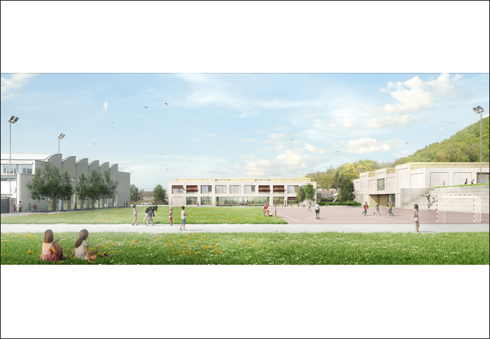
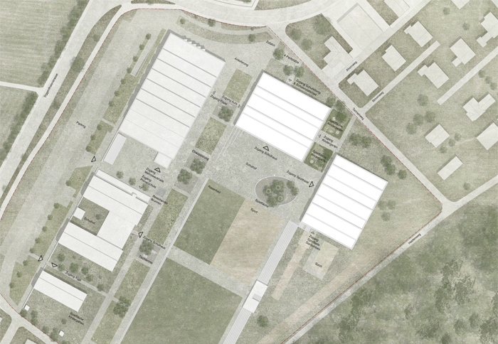
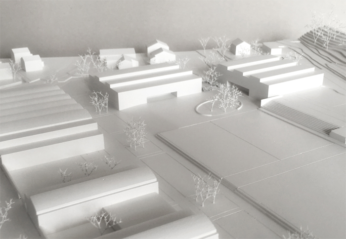
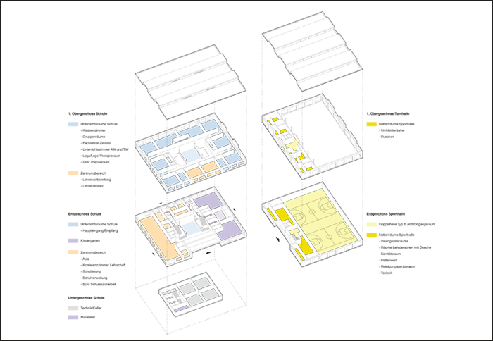
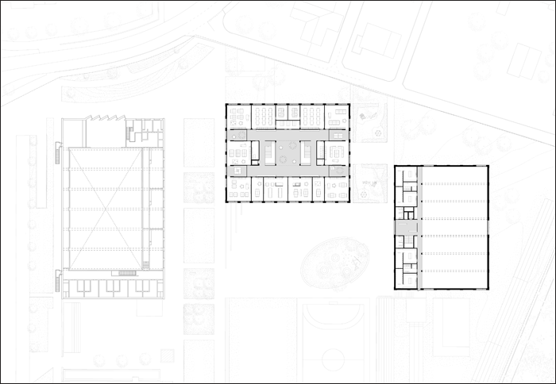
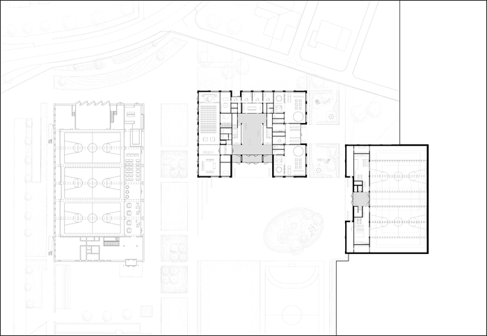
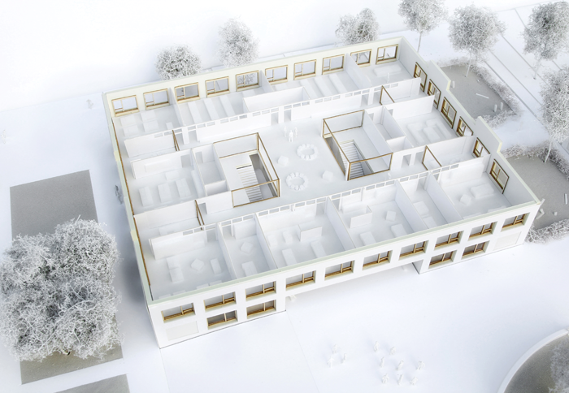
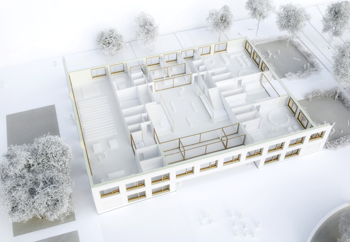
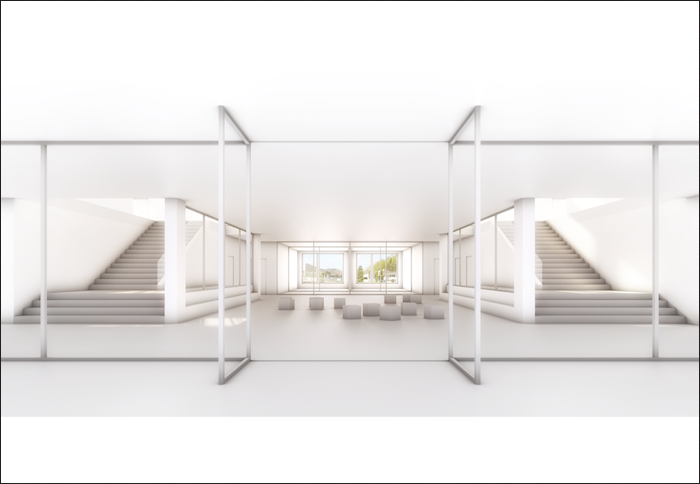
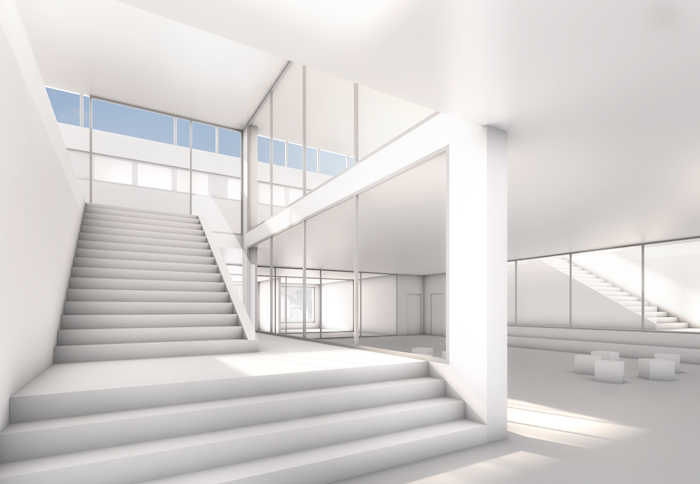
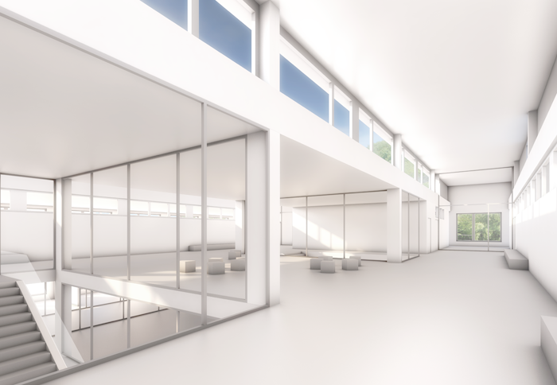
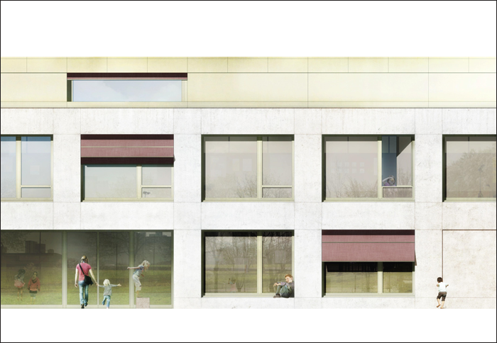
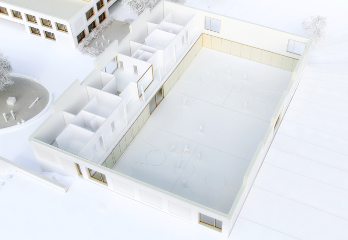
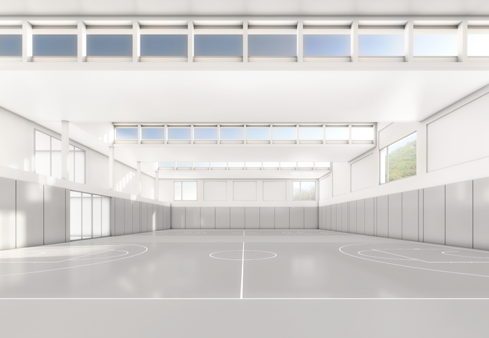
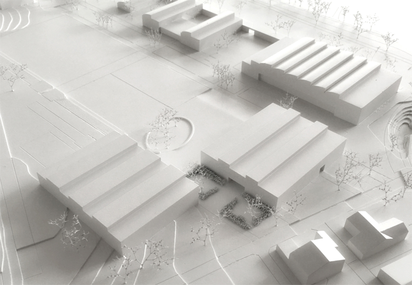
Projet: ECOLE WÜRENLINGEN, 2ème rang
Lieu: Würenlingen (AG)
Client: Commune de Würenlingen
Programme: Ecole avec jardin d’enfants et halle de sport double
Budget: 23’500’000 CHF
Date: 2016
Type: Mandat d’étude parallèle sur préqualification, 2ème rang
Team: NYX architectes, Synaxis AG Zürich (ingénieurs civils), Andreas Geser Landschaftsarchitekten AG (architectes paysagistes), Jaeger Baumanagement AG (économiste de la construction)
Images: Play-Time, NYX architectes